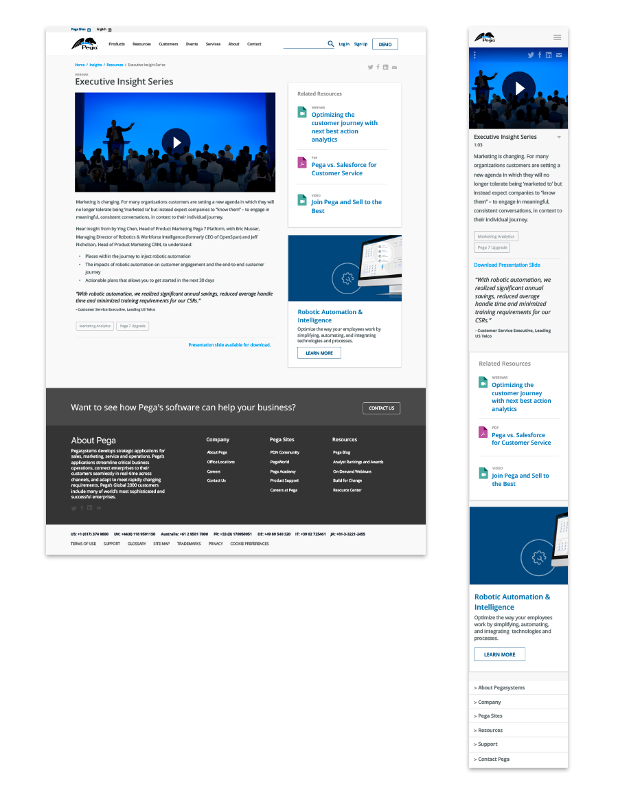

Design Problem
While a vital piece of Pega.com content (and common user destination), the Resource Detail Pages lack intuitive design and do not provide a good user experience.
The specific challenges are:
- Inconsistent content elements that vary in length and composition
- Unpolished visuals
- A virtual dead end that does not provide related content or encourage continued site engagement
- Lack of basic information around what Pega is
Constraints
- Leveraging existing content (PDF, video, links)
- Currently authored in ECM (limited set of fields, limited metadata and may increase scope of project)
- Timing TBD
- As much as possible, we want to reuse and refine existing patterns that are used in the design system.
- Brand positioning and imagery is still in flux, which may cause blips during the design process.
- Dev resources
- fielding traffic from all sorts of places (branch/tree analogy)
Process
Key Personas
- Business decision-maker: I am the main business owner and have formal authority to select the supplier and negotiate the terms of the purchase. I often take input from all committee members to assess the nature of the purchase and the implications to the business. I’m very focused on business outcomes and expected ROI.
- Technical decision-maker: I represent the IT function and have key influence in the software purchase. I am keenly interested in how the software purchase will enable business outcomes, how it will impact existing technical infrastructure, and what implementation looks like. I’m involved in determining the business need and technical requirements, recommending vendors, and evaluating them from a technical perspective.
- Visionary: Has a vision for organizational change that he's trying to sell to his colleagues, that focuses on omni-channel delivery and an expanded digital presence.
Key Scenarios
- When considering purchasing a product from Pega,
I want to see clear information that explores and evaluates Pega products
So I can feel confident about my purchase
- When I am ready to request purchasing a Pega product for my company,
I want to be provided with thought leadership content about specific concepts related to Pega products (case mgmt, next best action marketing) So I can have concrete justifications for making the request
- When I have purchased a Pega product
I want to be sent information about training
So I can build self-confidence about using the product I’ve purchased or direct users in my company to the same resources
- When I discover a Pega Products Resource Page via an organic search
I want to be provided with guidance on 'what to do' after consuming the resource/content
So I will not be at a dead-end in the experience
Result
